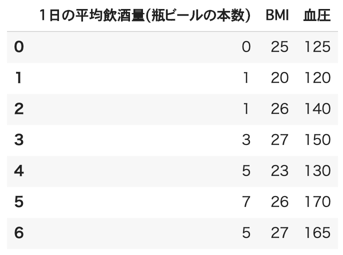
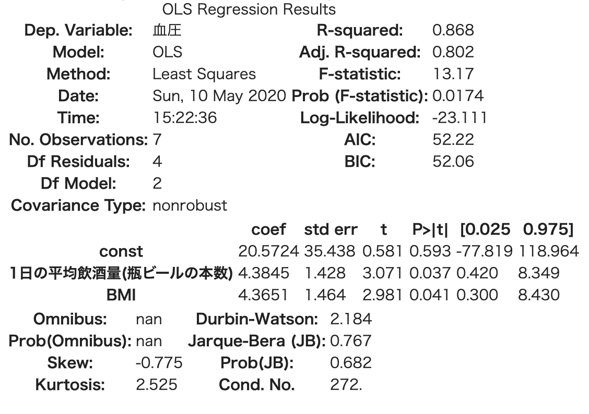
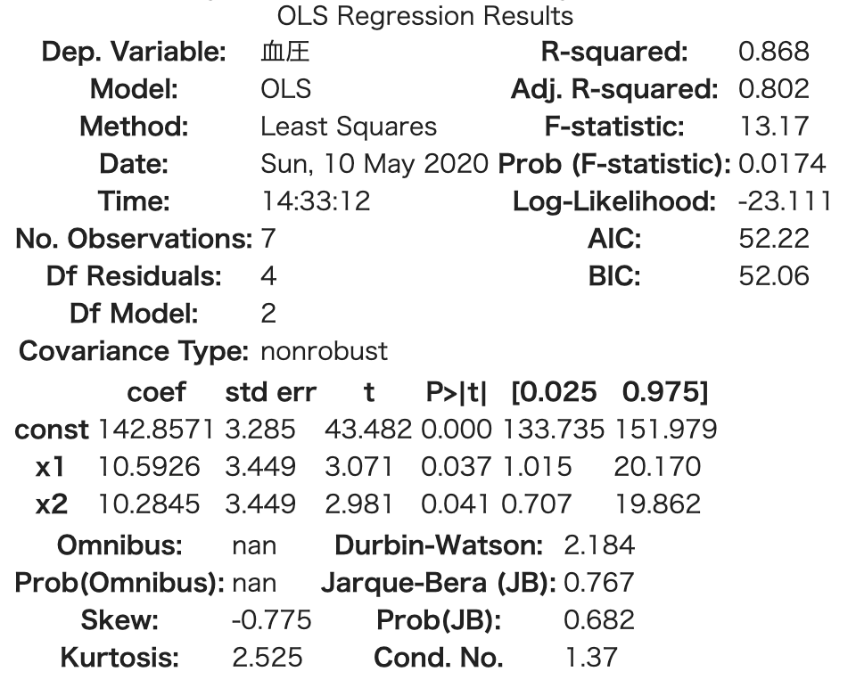

重回帰分析¶
単回帰分析の章でも説明した通り、重回帰分析では、 複数の説明変数から一つの目的変数を説明するものになります。 考え方は同じですが、説明変数が増えるので結果の解釈もまた複雑なものになります。
また、回帰式は
となります。 説明変数とその回帰係数が増えるだけです。回帰係数は偏回帰係数とも呼びます。
それでは早速例題をやってみましょう。
例:「1日の平均飲酒量」と「BMI」と「血圧」の関係¶
{kind=link}
先ほどの表にBMIが足してあります。肥満度を表す数値です。
今度は目的変数を「血圧」、説明変数を先ほどの「1日の平均飲酒量」に加えて「BMI」の２つで重回帰分析をしてみましょう。
また回帰式は以下の通りです。
またそれぞれの偏回帰係数の仮説は先ほどと同様の
となります。それでは重回帰分析してみましょう。
import pandas as pd
import statsmodels.api as sm
df = pd.DataFrame([[0,25,125],[1,20,120],[1,26,140],[3,27,150],[5,23,130],[7,26,170],[5,27,165]], columns=['1日の平均飲酒量(瓶ビールの本数)','BMI','血圧'])
# 目的変数
y = df['血圧']
# 説明変数
x = df[ ['1日の平均飲酒量(瓶ビールの本数)', 'BMI'] ]
# 切片（定数項）を追加
X = sm.add_constant(x)
# モデル作成
results = sm.OLS(y, X).fit()
# 結果出力
results.summary()
出力結果がこちらです。
{kind=link}
結果から回帰式は、
となりました。 また、決定係数が0.868、自由度調整済み決定係数でも0.802、それぞれの説明変数もp値が0.037と0.041なので有意水準5%以下で有意です。 それぞれの説明変数の偏回帰係数の仮説H0、帰無仮説を無事に棄却できます。 つまりこれらの説明変数は血圧に対して影響力のある説明変数であり、約80%以上の説明ができると結論づけることができます。 先ほどよりも血圧について説明できているみたいです。
さて、それではどちらの説明変数の方がより影響力があるのでしょうか。 1日の平均飲酒量と、BMIの偏回帰係数を比べると、1日の平均飲酒量の偏回帰係数の方が大きいです(0.01ですが)。 ということは、「1日の平均飲酒量を抑えた方が血圧は低くなる」と結論づけても良いのでしょうか。
答えは×です。
なぜなら説明変数はそれぞれ単位が違うからです。 飲酒量は本数、BMIは指数なので単位はありません（厳密にはある？）。
比べるためには標準化する必要があります。 説明変数を標準化してみましょう。
scikit-learnのStandardScalerで説明変数をそれぞれ平均値が0、標準偏差1に標準化したもので重回帰分析をやってみます。
import statsmodels.api as sm
import pandas as pd
from sklearn.preprocessing import StandardScaler
df = pd.DataFrame([[0,25,125],[1,20,120],[1,26,140],[3,27,150],[5,23,130],[7,26,170],[5,27,165]], columns=['1日の平均飲酒量(瓶ビールの本数)','BMI','血圧'])
# 目的変数
y = df[['血圧']]
# 説明変数
x = df[ ['1日の平均飲酒量(瓶ビールの本数)', 'BMI'] ]
# 標準化を行うインスタンス生成
stds = StandardScaler()
# 標準化
x_std = stds.fit_transform(x)
# 切片（定数項）追加
X_std = sm.add_constant(x_std)
# モデル生成
results = sm.OLS(y, X_std).fit()
# 出力
results.summary()
結果を出力してみます。
{kind=link}
1日の平均飲酒量の標準化偏回帰係数は10.59、BMIでは10.28となりました。 d これでやっと比較できるようになります。１日の平均飲酒量の方が影響力としては大きいようです。 しかし今回の場合はどちらも同じ感じの影響力でしたね。
また、血圧に関しては他にもたくさんの説明変数の候補があるでしょう。 例えば、喫煙の有無だったり、塩分の摂取量だったり、ストレス値だったり様々あります。 関係がありそうなものを自ら選んで試行錯誤して最適な予測式、モデルを作り上げ、説得力のある説明や、予測を行うことが重回帰分析のゴールになります。
実習：プレゼンの評価データを使用して重回帰分析をしてみよう¶
今回のプレゼンでは、「プレゼンのうまさ」、「テーマの魅力」、「スライド資料の見やすさ」、「テーマの説明力」 という4つの評価と「B3かB3でないか」という属性の、合計5つのデータを集めました。
「プレゼンのうまさ」に影響を与えているものはなにか、重回帰分析で分析してみよう。
目的変数：「プレゼンのうまさ」
説明変数：「テーマの魅力」「スライド資料の見やすさ」「テーマの説明力」「B3or notB3」
ゴール： 影響力のある説明変数はどれ？ 説明率は？ どの説明変数が一番影響力がある？
ヒント：例題で使用したコードを少し変えるだけで実現できますよ！